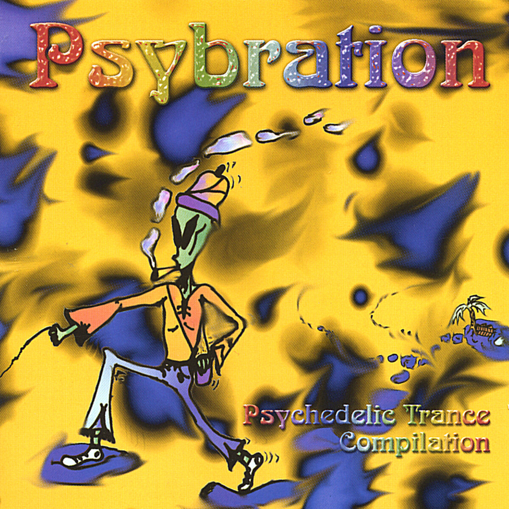
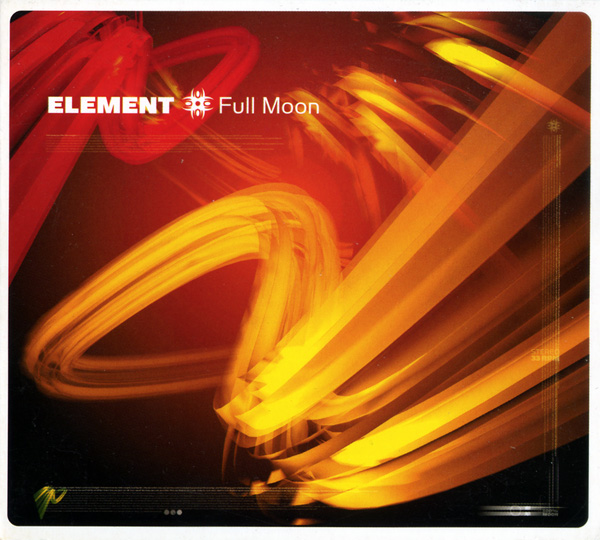
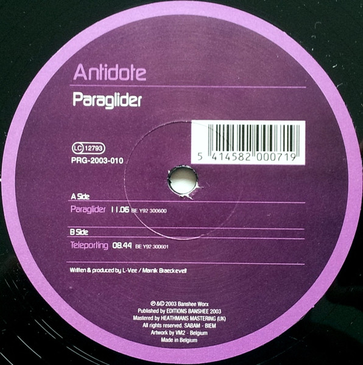
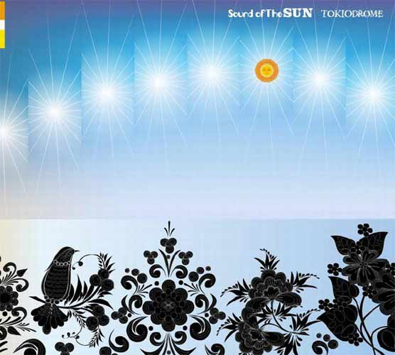

nx1.info | Recent Rare finds 18/04/2026
While dredging up stuff from the bottom of the ocean, occasionally we find very strange and surprising creatures...
[#001] [TRACK]: Qlap - Went Mental In Mexico (141 bpm) [ALBUM]: VA - Psybration (Psychedelic Trance Compilation) (2002) [LABEL]: AP Records (AP 108) [FOUND]: 2 April 2026 [STYLE]: Minimal / Techno / Psytrance / Goa Qlap, a joint effort by Son Kite & Ticon two of the GOAT have a few unreal bangers in the back catalogue, stumbled across this one from 2002, fast, punchy peak time madness.[#002] [TRACK]: 01 - Insane Creation - Can Feel (138 bpm) 05 - V-Tunes - 3rd Trial (138 bpm) 07 - Nasa - Someone to watch over me (137 bpm) [ALBUM]: VA - Posse (Compiled by DJ Nadi) (2005) [LABEL]: Domo Records (DOMOCD 006) [FOUND]: 8 December 2024 [STYLE]: Progressive Trance / Psytrance Psyprog compilation from Domo, been sitting on this for a long time but recently found a flac copy. 3 highlighted tracks are all only available on this compilation. Insane creation track needs no explanation, V-Tunes one is a small adage to the guitar trance era and the Nasa tune is a really funky groover.

[#003] [TRACK]: Dakota (136 bpm) Rise (138 bpm) [ALBUM]: Element - Full Moon (2002) [LABEL]: Spirit Zone Recordings (SZ 130) [FOUND]: 26 March 2026 [STYLE]: Psy-Trance / Progressive Trance Element is a Progressive psychedelic trance / Downtempo duo project based in Germany composed of Dieter Gerbe and Marc Engemann. This album is really musical and the production is so high quality; there's a few vocal tracks that may not be for everyone, but the two I highlighted are definitely peak psyprog dancey goodness.
[#004] [TRACK]: A - Paraglider (135 bpm) B - Teleporting (138 bpm) [ALBUM]: Antidote - Paraglider (2003) [LABEL]: Progrez (PRG-2003-010) [FOUND]: 14 March 2026 [STYLE]: Progressive Trance Antidote is the deep, dark progressive trance alias of Marnik (Marnix B), former International Manager from Lightning Records, produced together with L-Vee (Airwave). Title track Paraglider lives up to the name. The track makes you fly. What a journey, 11 minutes of pure goodness. Teleporting in a similar vein, both of these tracks have extended breakdowns, probably really good for resetting the vibe during a night. This release also received a FLAC re-release in 2015. Shout out to fango from Sydney for this one![#005] [TRACK]: Visions Of A Bad Hedgehog [ALBUM]: Pope Of Gegga - Living In The Past (2003) [LABEL]: Baluns Records (BALULP003) [FOUND]: 12 March 2024 [STYLE]: Progressive House / Techno / Progressive Trance Shoutout to Generator (of Cosmic Babies) for the recommendation! The production on this is immense. Mastered by the Son Kite duo (Henriksson & Mullaert) at High-Hat Studios. It's a dark, spooky, and trippy hybrid of techno and progressive house.
[#006] [TRACK]: Groovy Day (138 bpm) [ALBUM]: GMO - Groovy Day (2004) [LABEL]: Yellow Sunshine Explosion (YSE 036) [FOUND]: 18 April 2026 [STYLE]: Psy-Trance / Progressive Trance GMO is Olaf Gretzmacher from Hamburg. Title track is interesting, but so is the rest of the album. groovy day starts very deep with a sort of vocoder in the background before a synthline pulls it into a happier vibe. Some say cheesy, I say groovy.


[#007] [TRACK]: System 7 - Teotihuacan (Pyramid Of The Sun) (133 bpm) Robert Leiner - Solaris (138 bpm) [ALBUM]: Various - Sound Of The SUN - Tokio Drome (2002) [LABEL]: Elejam (EJAM-003) [FOUND]: 1 February 2026 [STYLE]: Techno / Psy-Trance / Progressive Trance Japanese compilation from the early 2000s. The System 7 track is a really great psychedelic techno, drums and guitars on it are fucking great. Robert Leiner (The Source Experience) - "Solaris" is a faster upbeat driving tune.